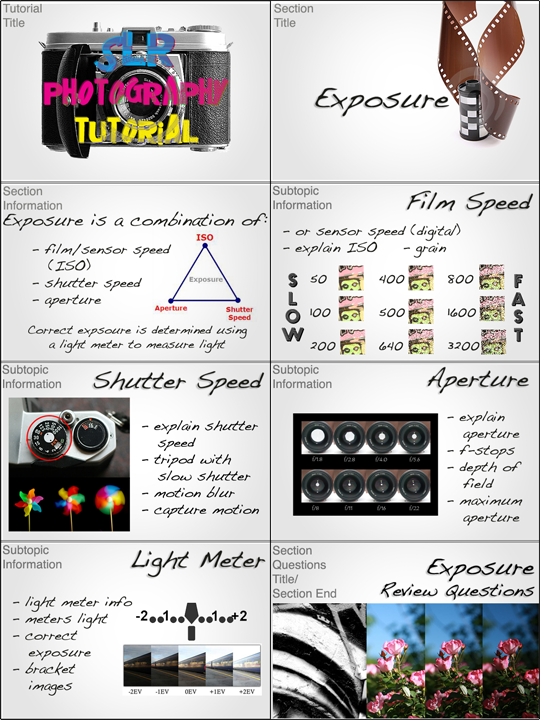
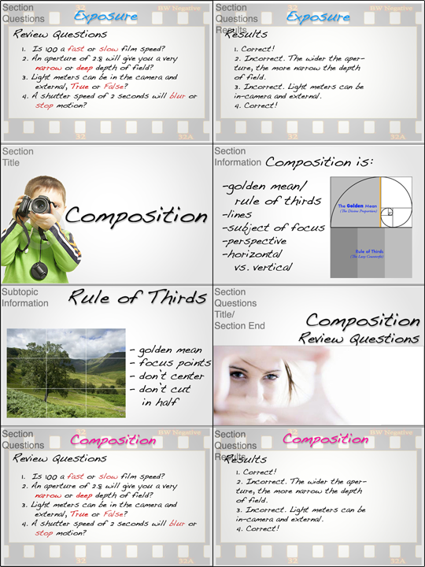
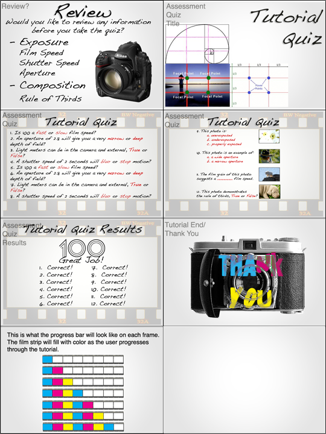

Final Project Proposal—SLR Tutorial
The topic of my tutorial will be how to use an SLR camera (digital or film). The tutorial will be taught in sections of subtopics, composition (rule of thirds) and the basics of manually setting exposure:
- Aperture - the diameter that the lens opening is set to
- Shutter speed - the length of time that the shutter is open
- ISO (film speed) - the sensitivity of the film or digital sensor
- Metering light - using the in-camera light meter to set exposure
If I need more content there are plenty of other subjects I can explore including: image quality, white balance, bracketing, more detailed information about aperture and depth of field/focusing, attaching and using different lenses, using flash, and shooting in different qualities of light.
The purpose of my photography tutorial is to educate users in the basics of using manual camera functions and how the different camera settings work together to create an exposure. Often when someone first has an SLR in their hands they get a little scared by all of the buttons and menus—hopefully my tutorial will make SLR usage a little less intimidating by supplying a basic foundation to start learning from. Also, I would like to include this tutorial as part of my senior capstone project, a website for a non-profit darkroom that offers public photography lessons.
The intended audience for my tutorial is photography students, or anyone interested in learning the basics of photography. If I use this as part of my senior project than the intended audience will also be visitors of the darkroom’s website. I will post this project on my portfolio website too, as an example of my design capabilities and to demonstrate my knowledge of photography to prospective clients and/or employers.
After a student uses my tutorial they should have more confidence using and a greater understanding of the functions of a SLR camera. Ideally tutorial users will be able to pick up a SLR, choose an appropriate combination of ISO, aperture, and shutter speed by reading the in-camera light meter, and make a well-composed and exposed photograph. The user may have to take the tutorial more than once, study, and practice to achieve this result.
To assess user progress during the tutorial, a short set of questions will be asked at the end of each subtopic. Users advance to the next subtopic of the tutorial after answering the questions and are provided with information to explain incorrect answers and prepare for the quiz at the end. User progress is measured by successful completion of each section/subtopic and will be displayed graphically with a filmstrip graphic, a bar that fills partially upon completing each subtopic and set of section questions. After completing both sections there will be a quiz covering material from the whole tutorial. The quiz may contain short answer, true and false, selection, and visual questions.
The following pages are a storyboard of the tutorial, an idea of the general structure of the document and frame layout. The content is mostly to give an idea of layout and is not complete or finalized. I plan to photograph/remake most of the graphics (so they’re all original, not clipart) and expand upon the content for the final version of the tutorial.
  